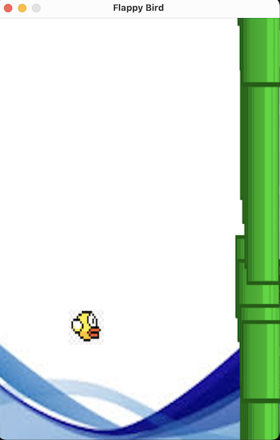
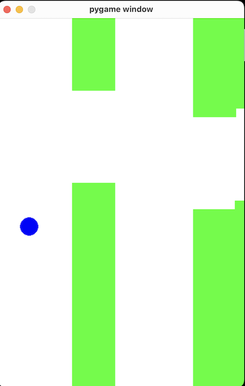

Running Deepseek 671B Model on a PC locally
DeepSeek is making waves. I was running the 32B model locally and came across a possibility (another link to run the 671B model on my machine.
Prerequisites
I have a PC with an 12th Gen i7-12700K and 20 cores, with 128GB RAM and a Nvidia RTX 4090 graphics card. While running the whole process took 106 GB RAM and 21 GB VRAM. This Post claims 20GB RAM is the minimum needed and optimal would be RAM+VRAM = 80GB.
The GGUF files are about 131 GB, so have some space.
Prep
Compile llama.cpp
apt-get update
apt-get install build-essential cmake curl libcurl4-openssl-dev -y
git clone https://github.com/ggerganov/llama.cpp
cmake llama.cpp -B llama.cpp/build \
-DBUILD_SHARED_LIBS=OFF -DGGML_CUDA=ON -DLLAMA_CURL=ON
cmake --build llama.cpp/build --config Release -j --clean-first --target llama-quantize llama-cli llama-gguf-split
cp llama.cpp/build/bin/llama-* llama.cpp
Download the model
> pip install huggingface_hub hf_transfer
> python
import os
from huggingface_hub import snapshot_download
snapshot_download(
repo_id = "unsloth/DeepSeek-R1-GGUF",
local_dir = "DeepSeek-R1-GGUF",
allow_patterns = ["*UD-IQ1_S*"], # Select quant type UD-IQ1_S for 1.58bit
)
Running the 671B model
The Instruction Create a Flappy Bird game in Python. took 21 Minutes on my machine (see run log below). That comes down to 1-3 tokens per second.
I had to create 3 images of the bird, pipes and background (with exact size). The result was disappointing, the program does not really work. It was over before I could press any button and the obstacles overlapped each other.

Running the 32B model (with ollama)
The 32GB model file is 19GB. Running the same instruction Create a Flappy Bird game in Python. it produced the following code in about 30 seconds.
import pygame
import random
import sys
# Initialize Pygame
pygame.init()
# Set up the game window
width = 400
height = 600
window = pygame.display.set_mode((width, height))
pygame.display.set_caption("Flappy Bird")
# Colors
white = (255, 255, 255)
black = (0, 0, 0)
# Bird properties
bird_x = 50
bird_y = 300
bird_radius = 15
velocity = 0
gravity = 0.5
jump_strength = -8
# Pipe properties
pipe_gap = 200
pipe_width = 80
pipe_height = random.randint(100, height - pipe_gap - 100)
pipes = []
pipe_speed = 3
score = 0
def draw_bird():
pygame.draw.circle(window, black, (bird_x, int(bird_y)), bird_radius)
def create_pipe():
global pipes
y = random.randint(100, height - pipe_gap - 100)
pipes.append({'x': width, 'y_top': y, 'y_bottom': y + pipe_gap})
def draw_pipes():
for pipe in pipes:
# Top pipe
pygame.draw.rect(window, black, (pipe['x'], 0, pipe_width, pipe['y_top']))
# Bottom pipe
pygame.draw.rect(window, black, (pipe['x'], pipe['y_bottom'], pipe_width, height - pipe['y_bottom']))
def move_pipes():
for pipe in pipes:
pipe['x'] -= pipe_speed
if pipes and pipes[0]['x'] < -pipe_width:
pipes.pop(0)
if pipes[-1]['x'] + pipe_width < width:
create_pipe()
def check_collision():
global score
# Check bird collision with pipes
for pipe in pipes:
if (bird_x + bird_radius > pipe['x'] and
bird_x - bird_radius < pipe['x'] + pipe_width and
(bird_y - bird_radius < pipe['y_top'] or
bird_y + bird_radius > pipe['y_bottom'])):
return True
# Check bird collision with ground
if bird_y + bird_radius > height:
return True
return False
def display_score():
font = pygame.font.Font(None, 36)
text = font.render(f"Score: {score}", True, black)
window.blit(text, (10, 10))
# Game loop
clock = pygame.time.Clock()
running = True
while running:
# Handle events
for event in pygame.event.get():
if event.type == pygame.QUIT:
running = False
if event.type == pygame.KEYDOWN and event.key == pygame.K_SPACE:
velocity = jump_strength
# Update game state
bird_y += velocity
velocity += gravity
move_pipes()
# Check for collisions
if check_collision():
print("Game Over! Score:", score)
running = False
# Increase score when passing pipes
if pipes and pipes[0]['x'] + pipe_width < bird_x:
score += 1
# Clear the screen
window.fill(white)
# Draw game objects
draw_bird()
draw_pipes()
# Display score
display_score()
# Update display
pygame.display.flip()
clock.tick(60)
# Exit Pygame
pygame.quit()
sys.exit()
This code does not work. I tried the same task with the 32B model on another machine and it also produced non working code.
pygame 2.6.1 (SDL 2.28.4, Python 3.13.1)
Hello from the pygame community. https://www.pygame.org/contribute.html
2025-02-03 21:51:54.117 Python[70009:7114701] +[IMKClient subclass]: chose IMKClient_Modern
2025-02-03 21:51:54.117 Python[70009:7114701] +[IMKInputSession subclass]: chose IMKInputSession_Modern
Traceback (most recent call last):
File "/Users/oliver/tmp/i/32b.py", line 92, in <module>
move_pipes()
~~~~~~~~~~^^
File "/Users/oliver/tmp/i/32b.py", line 54, in move_pipes
if pipes[-1]['x'] + pipe_width < width:
~~~~~^^^^
IndexError: list index out of range
Thoughts
It is not very practical to run the 671B model on my pc (cor coding reasons). Maybe for more research tasks, where speed is not an issue this might be useful. The 32B model do have some quality issues here. I’m sure with a bit of back and forth in Visual Studio extensions as Continue or Roo Cline I could fix these errors. But this will be another post.
ChatGPT counter part (free model)
I used the same example in ChatGPT and it create the program in about 30 seconds and this one I could sort of play although there was no collision detection.

Open AI Code:
import pygame
import random
# Constants
WIDTH, HEIGHT = 400, 600
GRAVITY = 1
FLAP_STRENGTH = -10
PIPE_GAP = 150
PIPE_WIDTH = 70
PIPE_SPEED = 3
BIRD_X = 50
# Initialize pygame
pygame.init()
screen = pygame.display.set_mode((WIDTH, HEIGHT))
clock = pygame.time.Clock()
# Bird class
class Bird:
def __init__(self):
self.y = HEIGHT // 2
self.velocity = 0
def flap(self):
self.velocity = FLAP_STRENGTH
def move(self):
self.velocity += GRAVITY
self.y += self.velocity
def draw(self):
pygame.draw.circle(screen, (0, 0, 255), (BIRD_X, int(self.y)), 15)
# Pipe class
class Pipe:
def __init__(self, x):
self.x = x
self.height = random.randint(100, HEIGHT - PIPE_GAP - 100)
def move(self):
self.x -= PIPE_SPEED
def draw(self):
pygame.draw.rect(screen, (0, 255, 0), (self.x, 0, PIPE_WIDTH, self.height))
pygame.draw.rect(screen, (0, 255, 0), (self.x, self.height + PIPE_GAP, PIPE_WIDTH, HEIGHT))
# Game loop
bird = Bird()
pipes = [Pipe(WIDTH + i * 200) for i in range(3)]
running = True
while running:
screen.fill((255, 255, 255))
for event in pygame.event.get():
if event.type == pygame.QUIT:
running = False
if event.type == pygame.KEYDOWN and event.key == pygame.K_SPACE:
bird.flap()
bird.move()
for pipe in pipes:
pipe.move()
if pipe.x < -PIPE_WIDTH:
pipes.remove(pipe)
pipes.append(Pipe(WIDTH))
bird.draw()
for pipe in pipes:
pipe.draw()
pygame.display.flip()
clock.tick(30)
pygame.quit()
This one worked out of the box.
Run log 671B Model
llama.cpp/llama-cli --model unsloth/DeepSeek-R1-GGUF/DeepSeek-R1-UD-IQ1_S/DeepSeek-R1-UD-IQ1_S-00001-of-00003.gguf --cache-type-k q4_0 \
--threads 12 -no-cnv --prio 2 \
--temp 0.6 \
--ctx-size 8192 \
--seed 3407 \
--prompt "<｜User｜>Create a Flappy Bird game in Python.<｜Assistant｜>" \
--n-gpu-layers 7; echo 14:52; date
ggml_cuda_init: GGML_CUDA_FORCE_MMQ: no
ggml_cuda_init: GGML_CUDA_FORCE_CUBLAS: no
ggml_cuda_init: found 1 CUDA devices:
Device 0: NVIDIA GeForce RTX 4090, compute capability 8.9, VMM: yes
build: 4622 (d92cb67e) with cc (Ubuntu 11.4.0-1ubuntu1~22.04) 11.4.0 for x86_64-linux-gnu
main: llama backend init
main: load the model and apply lora adapter, if any
llama_model_load_from_file_impl: using device CUDA0 (NVIDIA GeForce RTX 4090) - 23820 MiB free
llama_model_loader: additional 2 GGUFs metadata loaded.
llama_model_loader: loaded meta data with 52 key-value pairs and 1025 tensors from download_ds_671/DeepSeek-R1-GGUF/DeepSeek-R1-UD-IQ1_S/DeepSeek-R1-UD-IQ1_S-00001-of-00003.gguf (version GGUF V3 (latest))
llama_model_loader: Dumping metadata keys/values. Note: KV overrides do not apply in this output.
llama_model_loader: - kv 0: general.architecture str = deepseek2
llama_model_loader: - kv 1: general.type str = model
llama_model_loader: - kv 2: general.name str = DeepSeek R1 BF16
llama_model_loader: - kv 3: general.quantized_by str = Unsloth
llama_model_loader: - kv 4: general.size_label str = 256x20B
llama_model_loader: - kv 5: general.repo_url str = https://huggingface.co/unsloth
llama_model_loader: - kv 6: deepseek2.block_count u32 = 61
llama_model_loader: - kv 7: deepseek2.context_length u32 = 163840
llama_model_loader: - kv 8: deepseek2.embedding_length u32 = 7168
llama_model_loader: - kv 9: deepseek2.feed_forward_length u32 = 18432
llama_model_loader: - kv 10: deepseek2.attention.head_count u32 = 128
llama_model_loader: - kv 11: deepseek2.attention.head_count_kv u32 = 128
llama_model_loader: - kv 12: deepseek2.rope.freq_base f32 = 10000,000000
llama_model_loader: - kv 13: deepseek2.attention.layer_norm_rms_epsilon f32 = 0,000001
llama_model_loader: - kv 14: deepseek2.expert_used_count u32 = 8
llama_model_loader: - kv 15: deepseek2.leading_dense_block_count u32 = 3
llama_model_loader: - kv 16: deepseek2.vocab_size u32 = 129280
llama_model_loader: - kv 17: deepseek2.attention.q_lora_rank u32 = 1536
llama_model_loader: - kv 18: deepseek2.attention.kv_lora_rank u32 = 512
llama_model_loader: - kv 19: deepseek2.attention.key_length u32 = 192
llama_model_loader: - kv 20: deepseek2.attention.value_length u32 = 128
llama_model_loader: - kv 21: deepseek2.expert_feed_forward_length u32 = 2048
llama_model_loader: - kv 22: deepseek2.expert_count u32 = 256
llama_model_loader: - kv 23: deepseek2.expert_shared_count u32 = 1
llama_model_loader: - kv 24: deepseek2.expert_weights_scale f32 = 2,500000
llama_model_loader: - kv 25: deepseek2.expert_weights_norm bool = true
llama_model_loader: - kv 26: deepseek2.expert_gating_func u32 = 2
llama_model_loader: - kv 27: deepseek2.rope.dimension_count u32 = 64
llama_model_loader: - kv 28: deepseek2.rope.scaling.type str = yarn
llama_model_loader: - kv 29: deepseek2.rope.scaling.factor f32 = 40,000000
llama_model_loader: - kv 30: deepseek2.rope.scaling.original_context_length u32 = 4096
llama_model_loader: - kv 31: deepseek2.rope.scaling.yarn_log_multiplier f32 = 0,100000
llama_model_loader: - kv 32: tokenizer.ggml.model str = gpt2
llama_model_loader: - kv 33: tokenizer.ggml.pre str = deepseek-v3
llama_model_loader: - kv 34: tokenizer.ggml.tokens arr[str,129280] = ["<｜begin▁of▁sentence｜>", "<�...
llama_model_loader: - kv 35: tokenizer.ggml.token_type arr[i32,129280] = [3, 3, 3, 1, 1, 1, 1, 1, 1, 1, 1, 1, ...
llama_model_loader: - kv 36: tokenizer.ggml.merges arr[str,127741] = ["Ġ t", "Ġ a", "i n", "Ġ Ġ", "h e...
llama_model_loader: - kv 37: tokenizer.ggml.bos_token_id u32 = 0
llama_model_loader: - kv 38: tokenizer.ggml.eos_token_id u32 = 1
llama_model_loader: - kv 39: tokenizer.ggml.padding_token_id u32 = 128815
llama_model_loader: - kv 40: tokenizer.ggml.add_bos_token bool = true
llama_model_loader: - kv 41: tokenizer.ggml.add_eos_token bool = false
llama_model_loader: - kv 42: tokenizer.chat_template str = {% if not add_generation_prompt is de...
llama_model_loader: - kv 43: general.quantization_version u32 = 2
llama_model_loader: - kv 44: general.file_type u32 = 24
llama_model_loader: - kv 45: quantize.imatrix.file str = DeepSeek-R1.imatrix
llama_model_loader: - kv 46: quantize.imatrix.dataset str = /training_data/calibration_datav3.txt
llama_model_loader: - kv 47: quantize.imatrix.entries_count i32 = 720
llama_model_loader: - kv 48: quantize.imatrix.chunks_count i32 = 124
llama_model_loader: - kv 49: split.no u16 = 0
llama_model_loader: - kv 50: split.tensors.count i32 = 1025
llama_model_loader: - kv 51: split.count u16 = 3
llama_model_loader: - type f32: 361 tensors
llama_model_loader: - type q4_K: 190 tensors
llama_model_loader: - type q5_K: 116 tensors
llama_model_loader: - type q6_K: 184 tensors
llama_model_loader: - type iq2_xxs: 6 tensors
llama_model_loader: - type iq1_s: 168 tensors
print_info: file format = GGUF V3 (latest)
print_info: file type = IQ1_S - 1.5625 bpw
print_info: file size = 130,60 GiB (1,67 BPW)
load: special_eos_id is not in special_eog_ids - the tokenizer config may be incorrect
load: special tokens cache size = 819
load: token to piece cache size = 0,8223 MB
print_info: arch = deepseek2
print_info: vocab_only = 0
print_info: n_ctx_train = 163840
print_info: n_embd = 7168
print_info: n_layer = 61
print_info: n_head = 128
print_info: n_head_kv = 128
print_info: n_rot = 64
print_info: n_swa = 0
print_info: n_embd_head_k = 192
print_info: n_embd_head_v = 128
print_info: n_gqa = 1
print_info: n_embd_k_gqa = 24576
print_info: n_embd_v_gqa = 16384
print_info: f_norm_eps = 0,0e+00
print_info: f_norm_rms_eps = 1,0e-06
print_info: f_clamp_kqv = 0,0e+00
print_info: f_max_alibi_bias = 0,0e+00
print_info: f_logit_scale = 0,0e+00
print_info: n_ff = 18432
print_info: n_expert = 256
print_info: n_expert_used = 8
print_info: causal attn = 1
print_info: pooling type = 0
print_info: rope type = 0
print_info: rope scaling = yarn
print_info: freq_base_train = 10000,0
print_info: freq_scale_train = 0,025
print_info: n_ctx_orig_yarn = 4096
print_info: rope_finetuned = unknown
print_info: ssm_d_conv = 0
print_info: ssm_d_inner = 0
print_info: ssm_d_state = 0
print_info: ssm_dt_rank = 0
print_info: ssm_dt_b_c_rms = 0
print_info: model type = 671B
print_info: model params = 671,03 B
print_info: general.name = DeepSeek R1 BF16
print_info: n_layer_dense_lead = 3
print_info: n_lora_q = 1536
print_info: n_lora_kv = 512
print_info: n_ff_exp = 2048
print_info: n_expert_shared = 1
print_info: expert_weights_scale = 2,5
print_info: expert_weights_norm = 1
print_info: expert_gating_func = sigmoid
print_info: rope_yarn_log_mul = 0,1000
print_info: vocab type = BPE
print_info: n_vocab = 129280
print_info: n_merges = 127741
print_info: BOS token = 0 '<｜begin▁of▁sentence｜>'
print_info: EOS token = 1 '<｜end▁of▁sentence｜>'
print_info: EOT token = 1 '<｜end▁of▁sentence｜>'
print_info: PAD token = 128815 '<｜PAD▁TOKEN｜>'
print_info: LF token = 201 'Ċ'
print_info: FIM PRE token = 128801 '<｜fim▁begin｜>'
print_info: FIM SUF token = 128800 '<｜fim▁hole｜>'
print_info: FIM MID token = 128802 '<｜fim▁end｜>'
print_info: EOG token = 1 '<｜end▁of▁sentence｜>'
print_info: max token length = 256
load_tensors: offloading 7 repeating layers to GPU
load_tensors: offloaded 7/62 layers to GPU
load_tensors: CPU_Mapped model buffer size = 47058,04 MiB
load_tensors: CPU_Mapped model buffer size = 47109,49 MiB
load_tensors: CPU_Mapped model buffer size = 23859,37 MiB
load_tensors: CUDA0 model buffer size = 15703,16 MiB
llama_init_from_model: n_seq_max = 1
llama_init_from_model: n_ctx = 8192
llama_init_from_model: n_ctx_per_seq = 8192
llama_init_from_model: n_batch = 2048
llama_init_from_model: n_ubatch = 512
llama_init_from_model: flash_attn = 0
llama_init_from_model: freq_base = 10000,0
llama_init_from_model: freq_scale = 0,025
llama_init_from_model: n_ctx_per_seq (8192) < n_ctx_train (163840) -- the full capacity of the model will not be utilized
llama_kv_cache_init: kv_size = 8192, offload = 1, type_k = 'q4_0', type_v = 'f16', n_layer = 61, can_shift = 0
llama_kv_cache_init: CPU KV buffer size = 19656,00 MiB
llama_kv_cache_init: CUDA0 KV buffer size = 2548,00 MiB
llama_init_from_model: KV self size = 22204,00 MiB, K (q4_0): 6588,00 MiB, V (f16): 15616,00 MiB
llama_init_from_model: CPU output buffer size = 0,49 MiB
llama_init_from_model: CUDA0 compute buffer size = 2589,50 MiB
llama_init_from_model: CUDA_Host compute buffer size = 96,01 MiB
llama_init_from_model: graph nodes = 5025
llama_init_from_model: graph splits = 1015 (with bs=512), 3 (with bs=1)
common_init_from_params: KV cache shifting is not supported for this model, disabling KV cache shifting
common_init_from_params: setting dry_penalty_last_n to ctx_size = 8192
common_init_from_params: warming up the model with an empty run - please wait ... (--no-warmup to disable)
main: llama threadpool init, n_threads = 12
system_info: n_threads = 12 (n_threads_batch = 12) / 20 | CUDA : ARCHS = 890 | USE_GRAPHS = 1 | PEER_MAX_BATCH_SIZE = 128 | CPU : SSE3 = 1 | SSSE3 = 1 | AVX = 1 | AVX_VNNI = 1 | AVX2 = 1 | F16C = 1 | FMA = 1 | LLAMAFILE = 1 | OPENMP = 1 | AARCH64_REPACK = 1 |
sampler seed: 3407
sampler params:
repeat_last_n = 64, repeat_penalty = 1,000, frequency_penalty = 0,000, presence_penalty = 0,000
dry_multiplier = 0,000, dry_base = 1,750, dry_allowed_length = 2, dry_penalty_last_n = 8192
top_k = 40, top_p = 0,950, min_p = 0,050, xtc_probability = 0,000, xtc_threshold = 0,100, typical_p = 1,000, temp = 0,600
mirostat = 0, mirostat_lr = 0,100, mirostat_ent = 5,000
sampler chain: logits -> logit-bias -> penalties -> dry -> top-k -> typical -> top-p -> min-p -> xtc -> temp-ext -> dist
generate: n_ctx = 8192, n_batch = 2048, n_predict = -1, n_keep = 1
Create a Flappy Bird game in Python.<think>
Okay, the user wants me to create a Flappy Bird game in Python. Hmm, I need to think about how to approach this. Let's start by breaking down the problem. Flappy Bird is a simple game where a bird flies between pipes, and the player taps to make the bird jump. So, the main components are the bird, pipes, scorekeeping, and collision detection.
First, I should choose a Python library for graphics and game development. Pygame is a popular choice for such games. It provides the necessary functionalities for handling graphics, sounds, and events. So, I'll go with Pygame.
Next, the bird needs to move up and down. In Pygame, I can represent the bird as a rectangle or an image. For simplicity, maybe start with a simple shape. The bird's motion will have gravity; each frame, the bird's velocity will increase downward unless the user triggers a jump, which gives an upward velocity.
Pipes are obstacles that the bird must avoid. They should come in pairs, top and bottom, with a gap. The pipes spawn at the right edge of the screen and move leftward. When the bird passes a pipe, the score increases. So, I need to manage a list of pipes, generating them at certain intervals and removing them when they go off-screen.
Collision detection is crucial. Check if the bird collides with any pipe or the ground. If a collision occurs, the game ends. Also, the bird's position must be tracked, and movement must be smooth.
The game loop will handle events, like the space key press to make the bird jump. Each frame, the bird's position updates based on velocity, and the pipes move. The screen is redrawn each frame.
Let me outline the steps:
1. Initialize Pygame and set up the screen.
2. Create the bird object with position and velocity variables.
3. Handle user input to adjust the bird's velocity (jump).
4. Generate pipes with random heights and positions.
5. Move the pipes leftwards each frame.
6. Check for collisions between the bird and pipes or the ground.
7. Keep track of the score when the bird passes a pipe.
8. Display the score on the screen.
9. End the game when a collision happens, showing a game over screen.
Possible issues to consider: How to manage the pipe generation timing, the randomness of the pipe heights, handling the bird's physics (velocity and gravity), ensuring smooth movement, and handling the game over state.
Let's start coding. First, import Pygame and initialize it. Set up the screen with a specified size. Then, define the bird's properties: starting position, velocity, gravity effect. Each time the user presses the spacebar, apply a negative velocity to the bird (upward), and each frame, add gravity to the velocity.
For the pipes, create a list to hold each pipe's position. Each pipe pair (top and bottom) has a random vertical position but consistent gap between them. Use a timer to spawn new pipes at regular intervals. Then, in each frame, move the pipes to the left and remove those that are off-screen.
Collision detection: Check if the bird's rectangle collides with any pipe's rectangle. Also check if the bird hits the ground (bottom of the screen). If collision occurs, stop the game loop and display game over.
The score increases each time a pipe's x position is passed by the bird. So, need to track each pipe's position and increment the score when the bird is past it.
Displaying the score: Use Pygame's font rendering to show the current score on the screen.
Putting it all together, the code will have the main loop, handling events, updating positions, checking collisions, drawing everything, and managing the game state.
Testing each part: Bird movement should be smooth with acceleration. Pipes should appear at the right intervals and move left. Collisions should trigger game over. Score should update correctly.
Possible adjustments: Maybe the speed of the pipes, the gravity strength, jump force. Also, the size of the bird and pipes for collision accuracy.
I think this covers the main aspects. Now, let's code this step by step.
</think>
To create a Flappy Bird game in Python, we'll use the Pygame library, which provides the necessary tools for game development. Here's a step-by-step implementation:
import pygame
import sys
import random
# Initialize Pygame
pygame.init()
# Set up the game window
SCREEN_WIDTH = 400
SCREEN_HEIGHT = 600
screen = pygame.display.set_mode((SCREEN_WIDTH, SCREEN_HEIGHT))
pygame.display.set_caption("Flappy Bird")
# Load images
bird_img = pygame.image.load('bird.png').convert_alpha()
pipe_img = pygame.image.load('pipe.png').convert_alpha()
background_img = pygame.image.load('background.png').convert_alpha()
# Game clock
clock = pygame.time.Clock()
FPS = 60
# Game variables
gravity = 0.5
bird_jump = -5
pipe_speed = 3
gap_height = 150
# Bird class
class Bird:
def __init__(self):
self.x = SCREEN_WIDTH // 4
self.y = SCREEN_HEIGHT // 2
self.rect = pygame.Rect(self.x, self.y, 30, 30)
self.velocity = 0
def jump(self):
self.velocity = bird_jump
def update(self):
self.velocity += gravity
self.y += self.velocity
self.rect.y = self.y
# Pipe class
class Pipe:
def __init__(self):
self.x = SCREEN_WIDTH
self.height = random.randint(100, 400)
self.top = self.height - 300
self.bottom = self.height + gap_height
self.passed = False
self.top_pipe = pygame.Rect(self.x, 0, 60, self.height)
self.bottom_pipe = pygame.Rect(self.x, self.bottom, 60, SCREEN_HEIGHT - self.bottom)
def update(self):
self.x -= pipe_speed
self.top_pipe.x = self.x
self.bottom_pipe.x = self.x
# Score
def display_score(score):
font = pygame.font.SysFont('Arial', 30)
text = font.render(f'Score: {score}', True, (255, 255, 255))
screen.blit(text, (10, 10))
# Game loop
def main():
bird = Bird()
pipes = []
score = 0
running = True
while running:
clock.tick(FPS)
# Event handling
for event in pygame.event.get():
if event.type == pygame.QUIT:
pygame.quit()
sys.exit()
if event.type == pygame.KEYDOWN:
if event.key == pygame.K_SPACE:
bird.jump()
# Bird update
bird.update()
# Spawn pipes
if len(pipes) < 4:
pipes.append(Pipe())
# Update pipes
for pipe in pipes[:]:
pipe.update()
if pipe.x < -60:
pipes.remove(pipe)
if bird.x > pipe.x and not pipe.passed:
pipe.passed = True
score += 1
# Collision detection
for pipe in pipes:
if bird.rect.colliderect(pipe.top_pipe) or bird.rect.colliderect(pipe.bottom_pipe):
running = False
if bird.y < 0 or bird.y > SCREEN_HEIGHT:
running = False
# Draw everything
screen.blit(background_img, (0, 0))
screen.blit(bird_img, (bird.x, bird.y))
for pipe in pipes:
screen.blit(pipe_img, (pipe.x, pipe.top))
screen.blit(pipe_img, (pipe.x, pipe.bottom))
display_score(score)
pygame.display.update()
# Game over
if not running:
screen.fill((0, 0, 0))
font = pygame.font.SysFont('Arial', 40)
text = font.render(f'Game Over! Score: {score}', True, (255, 255, 255))
screen.blit(text, (SCREEN_WIDTH//2 - 120, SCREEN_HEIGHT//2 - 20))
pygame.display.update()
pygame.time.wait(2000)
if __name__ == '__main__':
main()
To run this code:
1. Install Pygame: `pip install pygame`
2. Save the code in a Python file (e.g., `flappy_bird.py`)
3. Create images for the bird, pipes, and background (or use placeholders)
4. Run the script
The game includes:
1. A bird that can jump using the spacebar
2. Scrolling pipes
3. Score tracking
4. Collision detection
5. Game over screen
Key aspects:
" Physics-based bird movement
" Random pipe generation
" Score tracking
" Collision detection
" Basic game state management
You'll need to create or find:
- A small bird image (50x50 pixels)
# A pipe image (60x400 pixels)
- A background image (400x600 pixels)
This implementation provides the core functionality of Flappy Bird. You can enhance it by adding:
- Better graphics
1. Sound effects
1. High score system
1. More sophisticated collision detection
1. Menu system [end of text]
llama_perf_sampler_print: sampling time = 141,02 ms / 2052 runs ( 0,07 ms per token, 14551,23 tokens per second)
llama_perf_context_print: load time = 35419,22 ms
llama_perf_context_print: prompt eval time = 3918,15 ms / 12 tokens ( 326,51 ms per token, 3,06 tokens per second)
llama_perf_context_print: eval time = 1184323,18 ms / 2039 runs ( 580,84 ms per token, 1,72 tokens per second)
llama_perf_context_print: total time = 1188667,53 ms / 2051 tokens